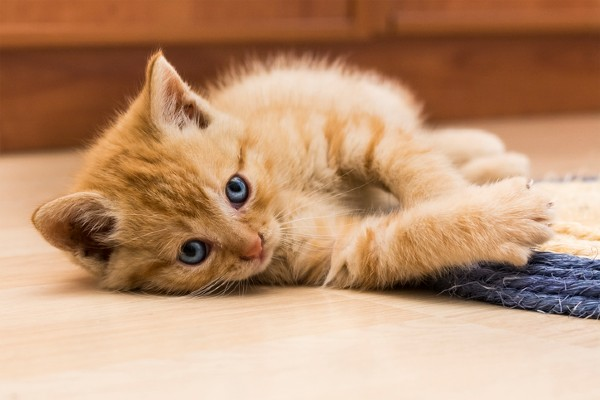
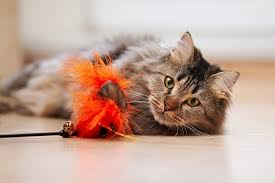

O Que Faz os Gatos Fofinhos?
Os gatos são animais adoráveis e brincalhões. Seu comportamento curioso e suas travessuras nos encantam todos os dias. Além disso, sua pelagem macia e seus olhos brilhantes nos fazem querer abraçá-los o tempo todo.
Por Que Adotar um Gato?
Adotar um gato é uma decisão que traz alegria e amor para o seu lar. Eles são independentes, mas também adoram companhia. Gatos fofinhos podem ajudar a reduzir o estresse e a ansiedade, além de serem ótimos para acompanhar você durante longas horas em casa.
Dicas de Cuidados
Para manter seu gato feliz e saudável, é importante oferecer uma alimentação adequada, um ambiente seguro e muitos brinquedos. Reserve um tempo para brincar com seu felino e observe como ele se diverte!